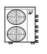
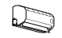
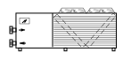
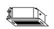
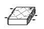
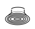
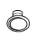

⬅ La carte du réseau · ligne bureau d'études CVC en cours de relecture
Le bureau d'études a choisi les équipements. Il reste à dire où ils se posent et par où passent les réseaux : c'est le plan d'implantation. Cette gare dure environ 2 heures. À la fin, vous saurez :
Prérequis : les gares 4 (types de plans), 5 (conventions), 6 (échelles) et 7 (cotation) du tronc commun. Cette gare est la première de la ligne bureau d'études CVC : le métier de technicien d'études en chauffage, ventilation et climatisation.
Le plan d'implantation est un dessin d'exécution : c'est lui que l'installateur suit pour poser les équipements et les réseaux.
L'exercice est écrit comme une commande de bureau d'études : une consigne, des indications, aucune réponse à recopier.
On ne redessine pas le bâtiment. L'architecte fournit un fond de plan : murs, portes, fenêtres. Le lot de chauffage, ventilation et climatisation (CVC) se pose par-dessus.
Avant de tracer quoi que ce soit, vous relisez le fond de plan avec les réflexes des gares 3 à 7 :
| Réflexe | Ce que vous cherchez | Gare |
|---|---|---|
| Le cartouche | l'échelle, l'indice de révision (A, B, C…) : on travaille sur le dernier indice | 3 |
| La légende | la table de traduction des traits et des symboles du plan | 5 |
| L'échelle | au 1/100, 1 cm sur le papier = 1 m dans le bâtiment | 6 |
| Les cotes | la cote écrite prime sur la mesure ; ce qui n'est pas coté, on le mesure et on le signale | 7 |
| Le nord et les façades | quelle façade regarde la rue : on n'y pose pas n'importe quoi | 4 |
La surface d'une pièce se calcule : longueur × largeur, en m². Exemple : 6,00 m × 3,00 m = 18,00 m².
Puis vous repérez ce qui compte pour le lot : les circulations (là où passent les réseaux), les locaux techniques, les façades libres.
Le lot ajoute au fond de plan deux choses : des équipements (une empreinte à l'échelle et un repère) et des réseaux (un trait et un repère). Voici les équipements de cette gare :
| Pictogramme | Équipement | Repère | Sur le plan |
|---|---|---|---|
 | Unité extérieure d'un split | UE1 | un rectangle contre une façade libre |
 | Unité intérieure murale | UI1 | un rectangle fin contre un mur de la pièce |
 | Groupe d'eau glacée : il fabrique l'eau froide | GEG1 | un grand rectangle à l'extérieur |
 | Ventilo-convecteur : il souffle l'air sur de l'eau froide | VC1 | un carré au centre de la pièce, au plafond |
 | CTA, centrale de traitement d'air : le caisson qui prépare et déplace l'air | CTA1 | un rectangle dans le local technique |
 | Bouche de soufflage : l'air entre dans la pièce | B1 | un petit carré au plafond |
 | Grille de reprise : l'air sort de la pièce | R1 | un petit rectangle |
Et voici les réseaux : un trait et un repère chacun.
| Réseau | Repère | Trait |
|---|---|---|
| Fluide frigorigène — liquide (le petit tube) | L | |
| Fluide frigorigène — gaz (le gros tube) | G | |
| Eau glacée — aller | EG-A | |
| Eau glacée — retour | EG-R | |
| Gaine de soufflage (l’air part vers le local) | AS | |
| Gaine de reprise (l’air revient vers la CTA) | AR |
Chaque bureau d'études a sa propre légende : on la lit avant de tracer (gare 5). Sur les plans de cette gare, elle est donnée.
Pictogrammes : collection QElectroTech (CC BY 3.0), adaptés par inerWeb — F. Henninot.
Pour chaque équipement, vous vous posez les cinq mêmes questions, dans cet ordre :
| Question | Comment y répondre |
|---|---|
| 1. Quelle empreinte ? | longueur × profondeur, lues sur la fiche de l'équipement ; vous les dessinez à l'échelle (au 1/100, 900 mm = 9 mm sur le papier) |
| 2. Où a-t-il le droit d'aller ? | les contraintes de la commande : par exemple, aucune unité extérieure en façade côté rue |
| 3. Où est-il utile ? | au plus près de ce qu'il sert : l'unité intérieure dans la pièce à traiter, le ventilo-convecteur au centre, la CTA dans son local |
| 4. Peut-on l'entretenir ? | l'air doit circuler librement autour d'une unité extérieure, et on doit pouvoir ouvrir et nettoyer. Les distances exactes sont celles de la notice : on ne les invente pas |
| 5. Où passent ses réseaux ? | le chemin le plus court et le plus droit ; chaque traversée de mur se prévoit avant de percer |
Un équipement = un repère unique, écrit sur le plan et dans la nomenclature.
Pour la pose d'un split, la station Poser les deux unités : emplacement, supports, dégagements (CartoClim) donne les règles de chantier.
Un réseau se trace comme on le lira : du départ à l'arrivée, sans trou. Attention : sur ce plan, la légende du lot donne un trait différent à chaque réseau (pointillé, tirets…) ; ce ne sont pas des traits « cachés » de la gare 5 : la légende fait foi. Les règles :
La longueur d'un réseau se mesure le long du tracé, détours compris — jamais en ligne droite entre le départ et l'arrivée. Les montées et les descentes ne se voient pas en plan : elles s'ajoutent à part.
Pour aller plus loin : les stations Les liaisons frigorifiques : longueur, dénivelé, isolant, Choisir les conduits et Groupe d'eau glacée et ventilo-convecteurs.
On place l'unité intérieure UI1 et l'unité extérieure UE1, puis on trace la liaison frigorifique. Plan à l'échelle 1/100.
Longueur de la liaison, mesurée le long des tubes, détours compris : 4,60 + 0,90 + 0,45 = 5,95 m, soit environ 6 m.
Le groupe d'eau glacée GEG1 est posé dehors, contre la façade ouest. Les ventilo-convecteurs VC1 et VC2 sont au centre des bureaux. L'eau part de GEG1 (aller), alimente VC1 puis VC2, et revient (retour) : les deux tubes voyagent côte à côte, chacun avec son repère, et chaque traversée de mur porte sa carotte.
Eau glacée, mesurée le long des tubes : aller 7,90 + 0,70 + 0,70 = 9,30 m ; retour 8,20 + 0,40 + 0,40 = 9,00 m.
La centrale CTA1 est dans le local technique. La gaine de soufflage AS part vers la bouche B1 ; la gaine de reprise AR ramène l'air de la grille R1 vers la CTA. Les gaines suivent le couloir, se dessinent à leur largeur (4 mm au 1/100) et portent une flèche : AS va de la CTA vers la bouche, AR va de la grille vers la CTA.
Gaines, mesurées le long du tracé : soufflage AS 2,25 + 3,45 + 3,65 = 9,35 m ; reprise AR 1,95 + 5,00 + 2,75 = 9,70 m.
Dans l'exercice, vous faites la même chose pour les réseaux, avec des contraintes à respecter et sans coordonnées données.
Un plan sans cartouche ni nomenclature n'est pas livrable.
| Cartouche | Ce qu'on y écrit |
|---|---|
| Opération et lot | le nom du projet et « CVC » |
| Titre | « Plan d'implantation — rez-de-chaussée » |
| Échelle | 1/100 (gare 6) |
| Indice et date | A, B, C… : à chaque révision, l'indice avance (gare 3) |
| Dessiné par | votre nom |
La nomenclature est la liste de tout ce qui est repéré sur le plan. Voici celle de l'exemple :
| Repère | Désignation | Qté | Dimensions | Position |
|---|---|---|---|---|
| UE1 | Unité extérieure de split | 1 | 900 × 350 mm | façade est |
| UI1 | Unité intérieure murale | 1 | 900 × 250 mm | mur nord |
| L, G | Tubes de la liaison frigorifique | 2 tubes | environ 6 m chacun | UI1 vers UE1 |
Règle d'or : tout repère du plan est dans la nomenclature, et tout ce qui est dans la nomenclature est sur le plan. Les quantités se comptent sur le plan, les longueurs se mesurent sur le plan.
Le plan que vous venez de tracer se retrouve en 3D dans la maquette numérique : mêmes équipements, mêmes réseaux. C'est l'objet de la gare 11 (suivre une installation dans la maquette 3D).
Sur un logiciel de dessin ou de maquette, la méthode ne change pas : fond de plan, équipements, réseaux, nomenclature. Ce qui change, c'est l'outil.
Répondez à tout, votre score s'affiche en bas.
Fond de plan lu, équipements placés, réseaux tracés, nomenclature remplie : vous savez livrer un plan d'implantation.
📄 Télécharger la commande du bureau d'études (PDF)
Pour l'enseignant : corrigé dans corrige.pdf (solution de référence, critères, longueurs mesurées). L'exercice demande de placer 9 repères et de tracer 4 réseaux sur un plan à 1/50, page A3 à imprimer à 100 % (en A4, on mesure avec la barre d'échelle du plan).
Pictogrammes : collection QElectroTech (CC BY 3.0), adaptés par inerWeb — F. Henninot.